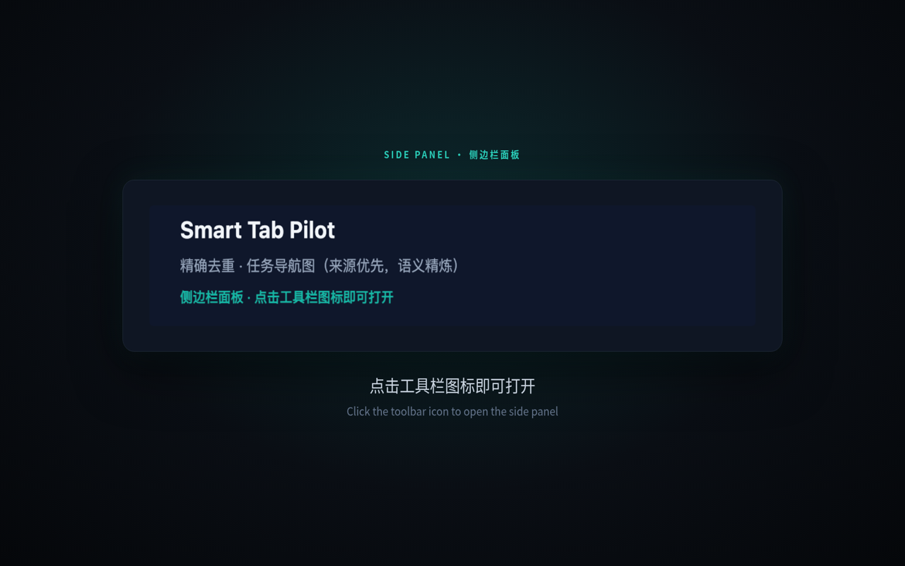

Exact URL dedupe
If the URL is already open in any window, jump there and close the duplicate. Hash is part of the match unless you ignore it.
Exact URL dedupe with a cross-window jump, plus a learnable task navigation graph. Side panel only. Models: on-device Nano → your OpenAI-compatible endpoint → local heuristics.
On the Chrome Web Store now (v1.5.0, listed 2026-11-05). Load unpacked from source remains for developers.
Features
What you actually use — not the implementation notes.
If the URL is already open in any window, jump there and close the duplicate. Hash is part of the match unless you ignore it.
Rules hint (true opener/referrer, project path); the model judges same-task from title + URL + summary. Same window or nearby open time never hard-merges.
Click the toolbar icon or press Ctrl+Shift+K / ⌘⇧K. No popup.
Language, Nano, custom model, and toggles sit behind the gear — the task list stays the main surface.
All windows or current window only — one logical view across monitors. The choice is saved.
Drag a task or tab onto another to merge, split it back out, or close a whole logical group.
Follow the browser, or lock the UI to Chinese or English.
Prefer Gemini Nano on device. Else your OpenAI-compatible Base URL. Else heuristics — the graph still works.
Models
Models name tasks and refine mixed clusters. Grouping still follows the navigation graph.
Chrome Prompt API LanguageModel. If the model is downloadable, tap Download / enable Nano in Settings (user gesture required).
Base URL, API key, and model name in chrome.storage.sync. Requests go only to the URL you type.
Title + short summary keywords. No page text leaves the device.
Install
Install from the store when you can. Load unpacked / source ZIP stay for developers and environments without the store.
Public listing v1.5.0 (updated 2026-11-05).
Install from Chrome Web StoreLoad the unpacked extension from the repository root — the folder that contains manifest.json.
chrome://extensions.manifest.json (the directory you cloned, e.g. smart-tab-pilot/).Product
Store listing shots of the real UI — not a mock.

